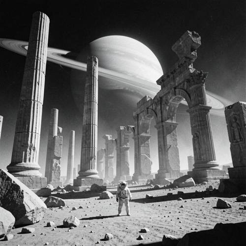
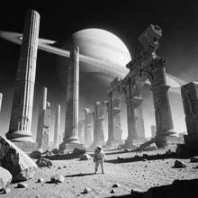

Style — Please generate a documentary black and white photo of a tiny astronau
Please generate a documentary black and white photo of a tiny astronaut standing next to the ancient ruins of a giant planet.


Judge — Direct
- PASSStyle — The image is presented in black and white. It has the quality of a photograph, with defined textures, lighting, shadows, and a slight film grain effect, which is consistent with the 'documentary black and white photo' style.
- FAILAttribute - Size — The image features a very large planet in the sky, which fulfills the 'giant planet' requirement. However, the astronaut in the foreground is depicted as a prominent, human-sized figure relative to the immediate ruined structures. The astronaut is not portrayed as 'tiny' within the overall composition, as it takes up a significant amount of space in the foreground.
Judge — Continuum
- PASSStyle — The image is presented in black and white, featuring high contrast and a noticeable grain texture, which is consistent with the style of a documentary black and white photograph.
- PASSAttribute - Size — The image shows an astronaut who appears small in scale relative to the massive, towering columns and arches of the surrounding ancient ruins. In the background, a very large, ringed planet is visible in the sky, appearing giant in the composition.
What the agent did
Thinking
Generate with flux2-klein. Documentary black and white photo, tiny astronaut next to ancient ruins of a giant planet. Let's craft a visual prompt.
Step 1 — `generate_image`
{
"model": "flux2-klein",
"prompt": "Documentary-style black and white photograph, grainy film look, high contrast: a tiny lone astronaut in a bulky spacesuit standing on barren rocky ground, dwarfed beside the colossal crumbling ancient ruins of a giant planet \u2014 massive toppled stone columns, broken monumental archways and weathered carved blocks stretching into the distance. A huge ringed gas giant planet hangs low in the dark sky behind the ruins. Harsh directional sunlight, deep shadows, dust in the air, vast scale contrast between the small human figure and the monumental ruins, shot on a wide-angle lens like a mid-century expedition photo."
}Result img_0

Thinking
The first generation looks quite good: black and white documentary style, tiny astronaut, giant ruins, ringed planet. All elements present. Composition is strong. Mark best and stop — good enough is a stop condition.
Step 2 — `mark_best`
{
"image": "img_0",
"reason": "Matches the prompt on first generation \u2014 no further edits needed."
}Model
The image is complete. Here's what it captures: - **Tiny astronaut**: a lone figure in a bulky white spacesuit, dwarfed at the bottom center of the frame, emphasizing the vast scale contrast - **Ancient ruins of a giant planet**: colossal toppled fluted columns, a broken monumental archway, and weathered carved stone blocks scattered across the barren terrain - **Giant planet**: a huge ringed gas giant looming low in the dark sky behind the ruins - **Documentary black & white aesthetic**: grainy film texture, harsh directional sunlight, deep shadows, and the look of a mid-century expedition photograph Every element you asked for is present and the composition works well, so I've marked this as the final result.